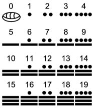

numerales mesoamericanos

El sistema de cálculo en Mesoamérica era vigesimal (basado en el número 20). En Mesoamérica, los mayas fueron al parecer los inventores del cero. El cero está representado en el diagrama aquí por un glifo simplificado; en su origen era un símbolo mucho más complicado. Para escribir las unidades entre 1 y 19 se desarrolló un sistema de combinaciones de puntos, que equivalían a uno, y de barras, equivalentes a cinco. Los números mayores de 20 se indicaban con un glifo para el múltiple de 20, más los puntos y barras necesarios. Según la evidencia arqueológica, este sistema aparece por primera vez a mediados del siglo II a.C. en la zona que correspondía a lo que había sido territorio olmeca.